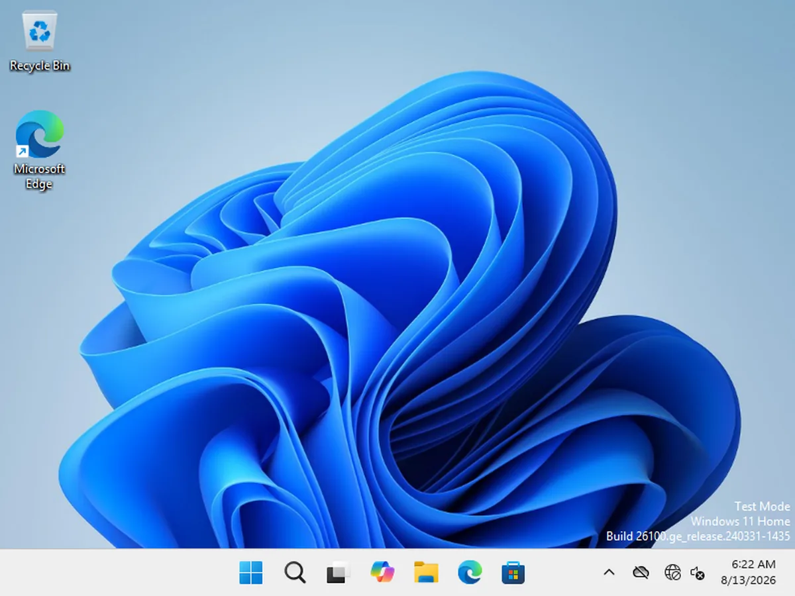

ENGINEERING PREVIEW / APPLE SILICON
Windows 11 Arm.
On your Mac.
A Windows desktop project built around BridgeVM’s own Hypervisor.framework virtual machine monitor. Open source, in active development, and not yet a finished release.
There is currently no safe downloadable General Preview. The historical v1.0.0 is not recommended and the terminal installer refuses it.


THE PLATFORM
A Windows machine,
built from the ground up.
BridgeVM develops its own VMM for Apple silicon, with a QEMU virt-compatible guest contract and documented deviations. This is a specific Windows 11 Arm path—not an every-Mac, every-workload promise.
WHAT THE ENGINE COVERS
Runs an installed Windows 11 Arm desktop on BridgeVM's own Hypervisor.framework VMM with persistent storage, display/input, dynamic resolution, network, audio, clipboard and folder integration, TPM/Secure Boot workflows, snapshots and window Coherence verbs. 3D acceleration is excluded from General Preview and v1; release-blocking evidence remains open and known defects are disclosed below.
Read the capability registryCURRENT STATE
A real desktop.
Open questions.
Engineering Preview is not General Preview. Release-blocking evidence remains open, and this page is not a substitute for the dated status record.
Read current limitationsInstall and import need proof.
No retained clean-machine product-flow receipt yet proves either journey through the app.
Display and audio have known defects.
The 3D-off app window was choppy in recent hardware runs, and guest audio stuttered. Later measurements do not establish that either is resolved.
3D is not in this release path.
Vulkan and D3D11 compatibility are experimental Graphics Lab future paths, excluded from General Preview and v1.
Distribution boundariesGET STARTED
Start with the source.
The current route is a local, ad-hoc-signed development build—not a verified release. You need Apple silicon, macOS 14+, Xcode/Swift 5.9+, and Rust 1.85+.
Open the build guideFor a Windows installation, bring:
- Your own licensed Windows 11 Arm ISO
- A signed ARM64 storage, serial and network driver payload
- An external SHA-256 manifest for that payload
An ISO alone is insufficient. BridgeVM does not redistribute the driver payload or enable Windows TESTSIGNING.